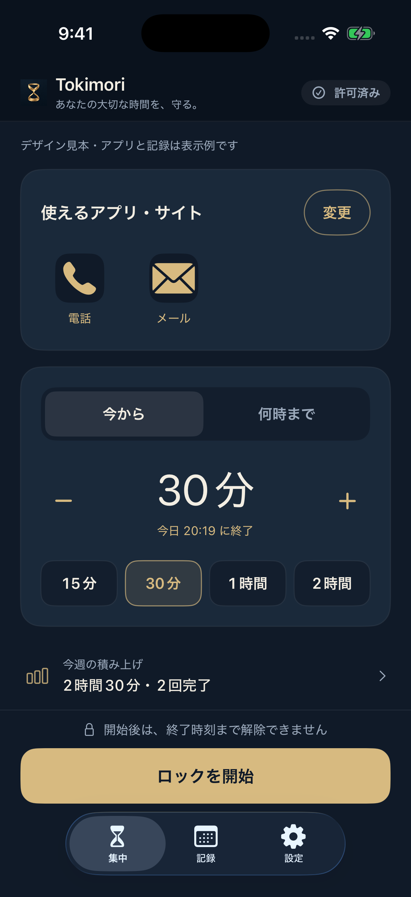
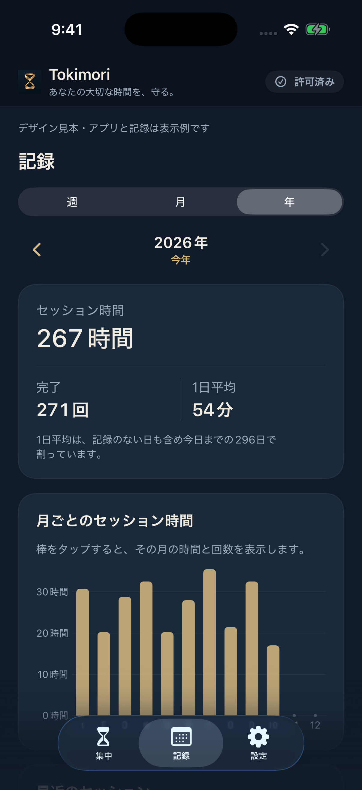

使えるアプリを選ぶ。
制限中も使えるアプリ・サイトを選択。大切な連絡に必要なアプリは、開始前に残しておきましょう。
MAKE TIME FOR WHAT MATTERS
スマホを置いて、読みたかった本を。
目の前の人との、何気ない会話を。
最低限必要なアプリを残して、
決めた時間だけスマホをロック。
Tokimoriは、自分で選ぶ時間をつくる
iPhoneアプリです。
日本のApp Storeで公開中 / 無料で5回お試し

LESS SCROLLING. MORE LIVING.
一息つくつもりが、いつの間にか長い時間。
そんな毎日に、小さな区切りを。
勉強も、趣味も、何もしないひとときも。
時間の使い道は、あなたが決める。
HOW IT WORKS
最低限使えるアプリを残し、ロックする時間を決めるだけ。前回の設定は、次回もそのまま使えます。
制限中も使えるアプリ・サイトを選択。大切な連絡に必要なアプリは、開始前に残しておきましょう。
「今から何分」または「何時まで」。過ごしたい時間に合わせて、ロックする長さを決めます。
確認してロックを開始。終了時刻まで、アプリ内で途中解除はできません。
スクリーンタイムの利用許可が必要です。OS設定からの権限取り消し等を防ぐ機能ではありません。iOSや端末の状態により、一部機能の制限や、制限の反映・解除が遅れる場合があります。

YOUR TIME, OVER TIME
完了したセッションを、週・月・年で振り返る。
合計時間、完了回数、1日平均。
自分のペースを、少しずつ見つけていく。
記録はセッションの開始・終了に基づく時間です。実際に集中した時間や、減らしたスマホ利用時間を測定するものではありません。記録は端末内に保存され、アプリの削除などで失われる場合があります。
SIMPLE PRICING
独自の会員登録は不要。自分の暮らしに合うか、ゆっくり確かめて。
開始に成功したセッションを5回まで。
無料分を使っても、自動で課金は始まりません。
続けたくなったら、2つのプランから。
150円 / 月
ひと月ずつ、気軽に。
1,500円 / 年
一年を通して、習慣に。
日本向け価格。どちらも同じ機能で、ロック開始の回数制限なく利用できます。月額・年額とも自動更新です。年額は1年分の一括払い。購入はAppleのアプリ内課金、管理・解約はApple Accountのサブスクリプション設定から行います。購入時の価格・条件はアプリ内の購入画面でご確認ください。
iOS 17以降のiPhoneに対応。
まずは無料で5回、試してみてください。
日本向け・バージョン1.0／2026年10月28日確認